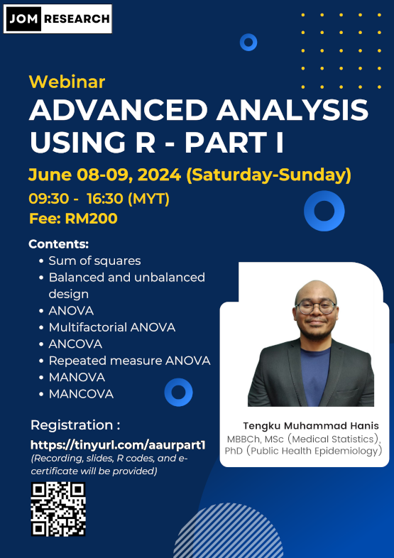

Advanced analysis using R - Part 1
This webinar is open for registration
- Title: Advanced analysis using R - Part 1
- Date: June 8-9, 2024 (Saturday-Sunday)
- Time: 09.30 am-04.30 pm (MYT)
- Language: English
- Fee: RM200 (recording, slides, dummy data, R codes, and e-certificates will be provided)
- Location: Online (Google Meet)
- Prerequisite: Basic knowledge of R, for those without the basics, you can either:
- Buy our webinar recording Intro to R (for non-coders) - RM50
- Or watch some introductory videos on R on YouTube
- Content:
- Sum of squares
- Balanced and unbalanced design
- ANOVA
- Multifactorial ANOVA
- ANCOVA
- Repeated measure ANOVA
- MANOVA
- MANCOVA
- Hands-on using R
- Click to register
